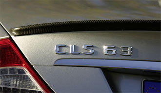
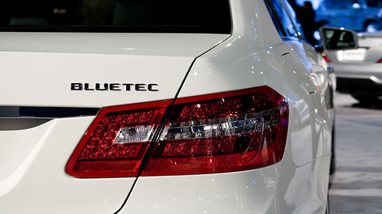

Typbeteckningar
May 23rd, 2011 by user
Typbeteckningar
Historik
Barn av sin tid
Sedan bilen uppfanns har Mercedes-Benz typbeteckningar följt tydliga system. Att de fortfarande ändras beror på att vi erbjuder ett allt större utbud av produkter.
Att typbeteckningarna ska rätta sig efter effekt är en tanke från 1890-talet, till exempel med Mercedes 35 PS (som alltså hade 35 hästkrafter). 1909 infördes en klassificering som utgick ifrån cylindervolymen som också togs med i beteckningarna. Ett exempel är Benz 28/50 PS. När den effekthöjande kompressormatningen intrducerades fick kompressormodellerna från 1924 namn efter motoreffekt både med och utan kompressor, till exempel Mercedes 15/70/100 PS.
Efter fusionen till Daimler-Benz AG infördes nya beteckningar från 1927 eftersom typprogrammet för det nya märket Mercedes-Benz utvidgades hela tiden. Ortnamn som Stuttgart, Mannheim och Nürnberg hade en direkt koppling till stadan där modellen tillverkades, till exempel 8/38 PS Stuttgart 200 och 14/70 PS Mannheim 350. De än idag bekanta tresiffriga talet infördes 1928, till en början som ett tillägg. Det utgick ifrån bilens cylindervolym.
Beteckningarna på de legendariska kompressorsportbilarna på 1920-talet följde en enkel logik med initialbokstäver: K, S, SS och SSK stod för Kurz (kort), Sport, Super Sport, och Super Sport Kurz.
Från 1931 gjordes beteckningssystemet mer enhetligt. Först ut var Typ 170, sedan fick de nya modellerna en tresiffrig beteckning som baserades på cylindervolymen.
I vissa fall, till exempel då olika modeller hade samma cylindervolym eller om man ville ange drivteknik, användes efterställda bokstavsbeteckningar: K stod för Kompressor, V eller H angav motorns placering fram respektive bak (Vorn/Heck) och D betydde för Diesel.
Under de kommande åren skulle systemet utvecklas – ända till produktutbudet blivit så stort att man behövde nya tydliga beteckningar.
De cylindervolymsbaserade talet stod i centrum även i det system som infördes 1993. Det som tillkom var framförställda bokstäver som klassbeteckning, till exempel S för S-Klass.
Omställningen till den nya typnomenklaturen påbörjades i slutet av 2008 med anledning av planerade produktförändringar och lanseringar. Fram till slutet av 2009 fungerade de två systemen parallellt.
Principen
Namnet säger allt
De nya beteckningarna på Mercedes-Benz bilar är logiska. Av beteckningarna framgår alltid modellserie, bränsletyp och driftteknik. Namnen består av två eller tre led. Omställningen pågick från oktober 2008 till slutet av 2009.
Exempel: S 400 HYBRID
Första ledet är klassbeteckningen. S står för S-Klass.
Andra ledet är typbeteckningen. För att kunna ta hänsyn till den samlade effekten hos bilen rättar sig de nya typbeteckningarna efter olika faktorer som cylindervolym, kW-värde och tekniska innovationer för drivningen.
Det tresiffriga talet står för totaleffekten. Under 240 betecknas detta i intervall om 20 (t.ex. 180, 200, 220) och över 240 i intervall om 50 (t.ex. 250, 300, 350). I vårt exempel S 400 BlueHYBRID innebär 400 en högre effekt och mer vridmoment i förhållande till basmodellen S 350.
Hybridbilar betecknas på samma sätt utifrån totaleffekt från förbrännings- och elmotorn. Därför bli effektklassen högre än för motsvarande förbränningsmotor.
Det tredje ledet är ett (eventuellt) tillägg. Om bilen har en särskild teknik anges det efter klass- och typbeteckning. För S 400 BlueHYBRID visar tillägget att denna S-Klass har en kombinerad drivning med bensin- och elmotor.
Det finns följande tillägg:
BlueEFFICIENCY: förbruknings- och utsläppsoptimerade bilar
BlueHYBRID: kombinerad bensin- och elmotor
BlueTEC: extra ren dieselteknik
CDI: dieselmotor med den senaste generationens effektiva Common-rail-direktinsprutning
CGI: förbruknings- och utsläppsreducerande bensindirektinsprutning
NGT BlueEFFICIENCY: bivalent drift, kan köras på fordonsgas eller blyfri bensin och minska koldioxidutsläppen med upp till 20 procent.
Nya namn
Typbeteckning efter effekt
Mercedes-Benz typbeteckningar är väl genomtänkta. Sedan bilens födelse har de utvecklats och på senare tid har de rättat sig efter cylindervolymen.
Nu avser typbeteckningarna i stället bilens totaleffekt. Anledningen till denna omställning är att vårt utbud av produkter ökat markant och att tekniken gjort nya landvinningar. Med de nya beteckningarna kan till exempel modeller med ren eldrift – som alltså inte har någon förbränningsmotor och därför inte heller någon cylindervolym – att kunna få konsekventa beteckningar. Omställningen påbörjades i oktober 2008 och avslutas i slutet av 2009. Under denna tid förekommer både de gamla och nya beteckningarna.
Den grundläggande principen för Mercedes-Benz typbeteckningar är densamma: hög siffra i typbeteckningen betyder hög effekt. Klassbeteckningen är även fortsättningsvis bokstäver. Beteckningar för nya tekniker kommer att komplettera detta.


Tillbaka till artiklar